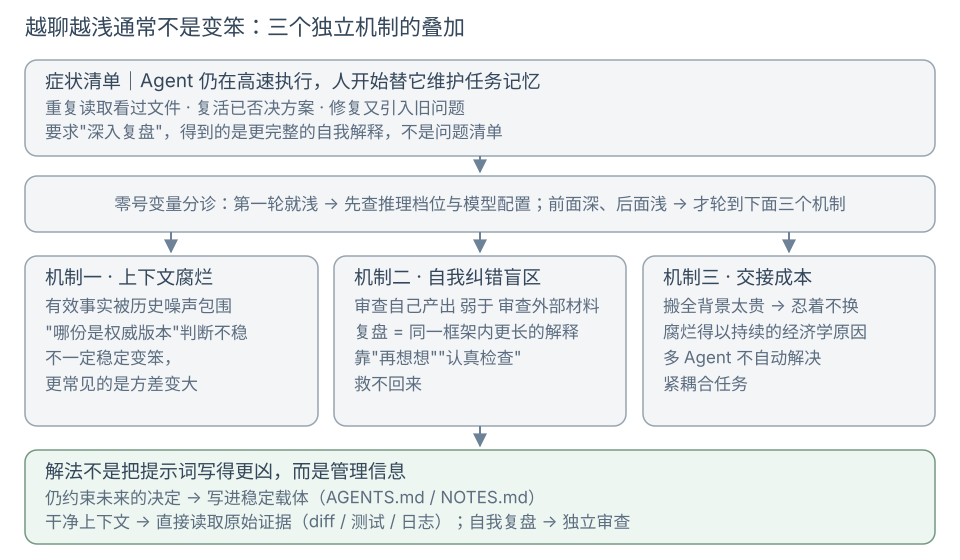
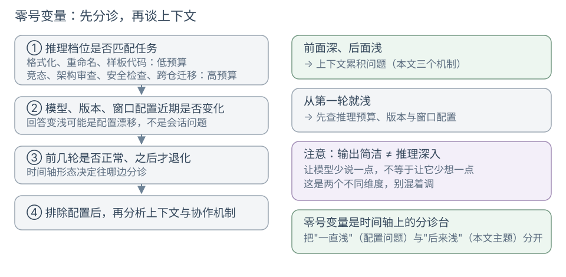
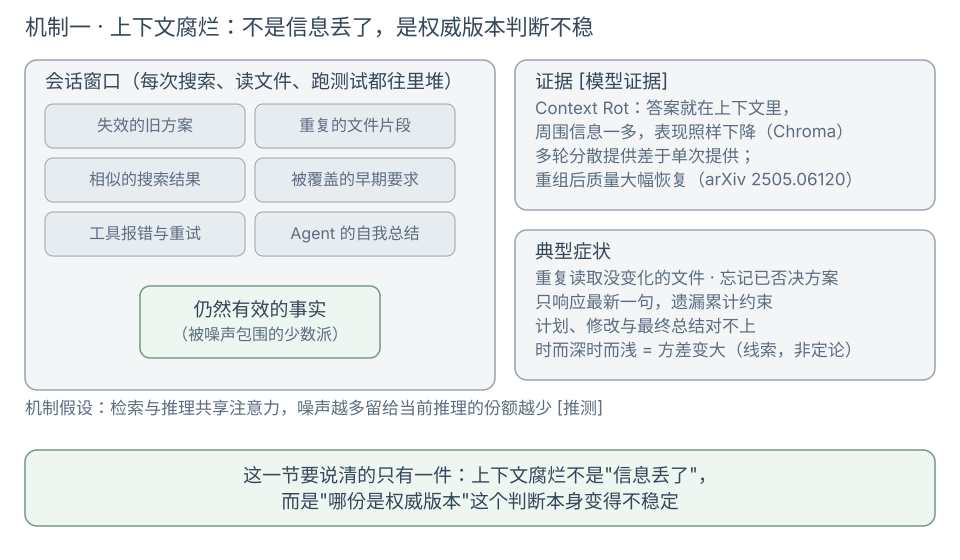
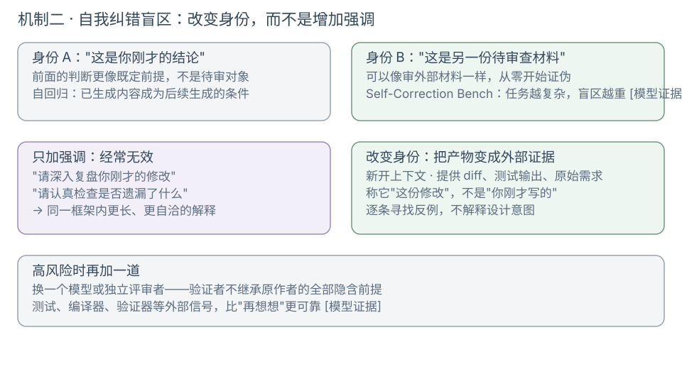
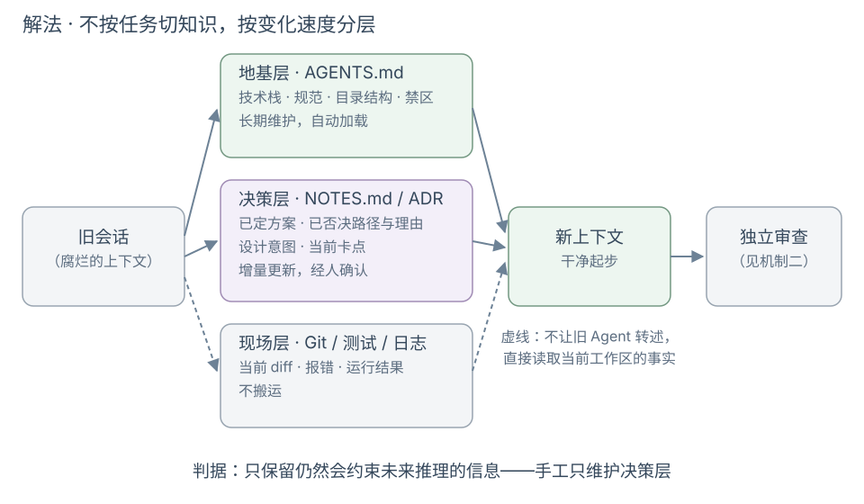

先给一句话答案
越聊越浅通常不是变笨，是三个独立机制的叠加
同一个编码 Agent，刚开始分析得很深，做着做着却越来越敷衍：重复读取已经看过的文件、修复一个问题又复活几小时前处理过的旧问题、让它"深入复盘"得到的往往是一段更完整的自我解释。最消耗人的信号是：人开始替 Agent 维护任务记忆——反复提醒已确认的约束，阻止它复活被否决的方案，再逐项核对它口中的"完成"。

一句话答案："越聊越浅"通常不是模型突然变笨，而是上下文腐烂、自我纠错盲区、交接成本三个独立机制的叠加；外加一个必须最先排除的零号变量——推理预算或模型配置本身不适配。解法不是把提示词写得更凶，而是管理信息：把仍约束未来的决定写进稳定载体，让干净的上下文直接读取原始证据。
查看症状清单与失控轨迹原型 ↗ Markdown 对应段落零号变量
第一轮就浅？先查配置，别急着诊断上下文
如果回答从第一轮开始就浅，先别诊断上下文。推理模型有思考预算：格式化、重命名和样板代码用低预算就够；复杂竞态、架构审查、安全检查和跨仓迁移需要更高预算。还要分清：输出简洁与推理深入是两个维度——让模型少说一点，不应该等价于让它少想一点。

机制一
上下文腐烂：不是信息丢了，是权威版本判断不稳
Agent 每次搜索、读文件、跑测试的结果都会进入会话。任务推进后，窗口里同时存在失效的旧方案、重复的文件片段、语义相似的搜索结果、被覆盖的早期要求、报错重试和自我总结——仍然有效的事实被噪声包围。一个候选解释是检索与推理共享注意力资源（本文的 [推测]，附剂量效应验证方式）；研究观察到的是：即使正确答案已在上下文中，周围信息增加也会降低表现。

典型症状：重复读取没变化的文件、忘记已明确否决的方案、只响应最新一句而遗漏累计约束、计划修改与总结对不上、时而深时而浅。最后一种"方差变大"是线索不是定论——它也可能来自采样温度或服务端负载波动，结合零号变量的排查顺序使用。
查看上下文腐烂的机制假设与证据 ↗ Markdown 对应段落机制二
自我纠错盲区：改变身份，而不是增加强调
让 Agent 复盘自己刚做的工作听起来很合理——上下文都在，它最了解自己做过什么。但"最了解过程"不等于"最适合证伪过程"：自回归模型继续回答时，前面的判断更像既定前提，而不是需要从零审查的外部对象。Self-Correction Bench 报告了明显的盲区，且任务越复杂越严重；缺少外部反馈时，"再想想""认真检查"不仅常无效，有时还会把原本正确的答案改错。

风险高时换一个模型或独立评审者——价值不在投票，而在让验证者不继承原作者的全部隐含前提。
查看自我纠错盲区的证据与身份改变法 ↗ Markdown 对应段落机制三
交接成本：腐烂得以持续的经济学原因
前两个机制都指向同一个动作——换到更干净的上下文，但如果换上下文很贵，腐烂就会持续。代码任务高度紧耦合：一个修改可能同时依赖项目规范、多轮追加的约束、已失败的方案、当前 diff、测试环境，以及只能从历史讨论理解的设计意图。每次人工重写背景太贵，于是大家留在已腐烂的旧上下文里，质量进一步下降。
多 Agent 也不会自动解决问题：Anthropic 的经验是并行架构适合可拆成独立分支的研究任务，对需要共享状态的紧耦合任务效果更差、成本显著增加。并行度解决的是吞吐，未必解决单点深度。
查看交接成本与多 Agent 边界 ↗ Markdown 对应段落解法
不按任务切知识，按变化速度分层
"新窗口需要知道哪些内容"这个问题几乎答不对——代码任务彼此纠缠。更稳定的问法是换一个切分维度：这条信息变化得有多快？ 由此得到三层：地基层（技术栈、规范、禁区 → AGENTS.md，自动加载）；决策层（已定方案、已否决路径、设计意图 → NOTES.md / ADR，增量更新）；现场层（diff、测试、日志 → Git 和工具输出，不搬运）。

什么值得进入持久上下文，判据一句话：只保留仍然会约束未来推理的信息。"我读了 20 个文件"不值得保留；"方案 A 因为事务边界不成立而被否决"值得保留。过期笔记会在每次会话中重复污染上下文。
查看分层表与持久上下文判据 ↗ Markdown 对应段落判断框架
两条轴：身份轴 × 时效轴，交叉出四种处理方式
具体到某一条信息，问两个问题：身份轴——它是当前模型自己的产出，还是外部证据？时效轴——它仍然约束未来，还是已经完成的过程？交叉得到：外部证据 + 仍约束未来 → 保留或按需读取；外部证据 + 已完成 → 用完清理；模型自产 + 仍约束未来 → 写入文件、经人确认后重新加载；模型自产 + 已完成 → 直接清理。
"经人确认"防的是：模型对过程的有损总结在未经人审阅时写入持久层，变成下一轮会话的"权威事实"。最没价值的是"已经完成的模型自述"——占空间、是有损总结、还容易触发自我纠错盲区。一条记录一半仍有约束力、一半已作废时，拆成两条分别处理，不要硬塞进一格。
查看两轴表与常见做法有效性对照 ↗ Markdown 对应段落流程
证据式复盘：五段输入 + 三条纪律
长任务进入复盘阶段时，直接采用五段输入结构：原始目标（用户真正要什么）、仍然有效的约束（只列当前有效规则，注明权威来源）、已否决方案（方案 + 否决原因 + 证据）、当前事实（让新上下文自行读取 git diff、测试和日志）、审查任务（寻找被绕过的要求、被掩盖的失败、未验证的假设、半途而废的工作）。
三条纪律：① 不要求旧窗口证明自己正确；② 不只读取作者总结，要读取原始产物；③ 每个"已完成"都必须对应外部证据。交接材料最常见的死法是"我做了什么"式流水账——它把旧会话的噪声原样复制进新会话。复盘的质量取决于输入的身份（证据还是自述），而不是复盘指令的强度。
查看复盘输入模板与三条纪律 ↗ Markdown 对应段落速查
症状—原因速查表：先怀疑谁，误判了怎么办
使用方法：先按症状定位行，执行"首要动作"；没改善再查"误判时怎么办"。几行示例：从第一轮就浅 → 查推理档位和版本；前几轮好后来浅 → 停止扩写历史，建约束清单，新上下文读当前事实；复盘全是自洽解释 → 改成外部审查任务（diff + 测试 + 找反例）；反复采用已否决方案 → 补记方案与否决理由——没有理由的禁令最难被遵守。
最后一行是对本文主推动作的自我设限：上下文腐烂不能被简化成定时清空会话。修改很小、约束没变、Agent 仍能准确回放目标与非目标、问题依赖尚未落盘的局部推理、交接成本高于剩余工作——这些情况留在当前会话更划算。真正的切换信号不是 token 数，而是任务模型是否仍然稳定：抽查三问——当前目标是什么？哪条路径已被否决？完成需要哪些证据？答错任何一个关键项，就不应继续扩大修改面。
查看完整速查表与抽查三问 ↗ Markdown 对应段落结语
别让旧上下文汇报自己；让它交出记录
编码 Agent 越聊越浅，不一定是模型突然变差，也不一定能靠更强烈的提示词解决。真正有效的方向是管理信息：减少已经失效的过程，把仍然有效的决定写进稳定载体，让新上下文从原始证据重新建立判断，并把自我复盘改成独立审查。
可以把全文压缩成一句工作原则：别让旧上下文汇报自己做得怎么样；让它交出记录，再让一个干净的上下文读取证据。
查看结语与证据边界声明 ↗ Markdown 对应段落展开完整深入版
为什么编码 Agent 越聊越浅：上下文腐烂、自我纠错盲区与交接成本
讲解版入口：配套 10 分钟图文版在
阅读/讲解-01-越聊越浅.html；机制一至三分别对应本文 §二、§三、§四，分层解法对应 §五，分诊表对应 §八。
断言标注约定：本文所有关键判断按四分法标注——
[模型证据]（公开研究/评测直接观察到的现象）、[官方研究]（厂商一手工程经验，属经验性证据）、[经验]（作者实践经验）、[推测]（本文提出的机制假设，附验证方式）。无标注的为可直接核对的定义或流程描述。
引子：症状与一句话答案
同一个编码 Agent，刚开始分析得很深，做着做着却越来越像在敷衍。
症状清单——正在经历下面这些，本文就是为你写的：
- 开始重复读取已经看过的文件，忘记前几轮明确排除的方案
[经验]； - 修复一个问题，却重新引入几小时前已经处理过的旧问题
[经验]； - 让它"深入复盘"，得到的往往不是问题清单，而是一段更完整的自我解释
[经验]； - 最消耗人的信号：人开始替 Agent 维护任务记忆——反复提醒已确认的约束，阻止它复活被否决的方案，再逐项核对它口中的"完成"。Agent 仍在高速执行，但省下来的编码时间被纠偏、回滚和复查重新吃掉。
一句话答案："越聊越浅"通常不是模型突然变笨，而是三个独立机制的叠加——上下文腐烂、自我纠错盲区、交接成本；此外还有一个必须最先排除的零号变量：推理预算或模型配置本身不适配。解法不是把提示词写得更凶，而是管理信息：把仍然约束未来的决定写进稳定载体，让干净的上下文直接读取原始证据。
本文要回答的具体问题是：出现哪些信号时应该继续当前会话，哪些信号说明应该立即停手、固化决定，并让干净上下文读取原始证据？
一个长任务通常怎样失控
下面是一条构造的原型案例：它不是某次真实事故的复盘记录，而是从跨文件重构、复杂缺陷修复、连续需求变更等长任务中归纳出的高度相似失控顺序 [经验]。业务细节可以不同，失控次序几乎一致：
- 前几轮，Agent 正确找到了入口、约束和测试范围；
- 中途用户否决方案 A，并补充"后端逻辑保留，只移除前端入口"；
- Agent 又经历多轮搜索、测试失败和局部修复；
- 后续它只记住"移除功能"，顺手删除后端逻辑，或者再次提出方案 A；
- 用户要求复盘，它解释每一步为什么合理，却没有主动对照最初约束和当前 diff；
- 用户不得不重新整理需求，再开一个上下文从头审查。
这条轨迹里至少藏着三个不同痛点：任务历史变成噪声（机制一）、作者难以推翻自己的既有解释（机制二）、换上下文又会丢失关键决定（机制三）。把它们统称为"模型变笨"，只会得到"换更强模型"或"提示词再强调"的泛化建议，对操作毫无指导。
先认症状、再拆机制、后谈解法——顺序不能反，因为三个机制的症状高度相似，只有拆开才能对症。
一、先排除零号变量：它可能从一开始就没认真想
如果回答从第一轮开始就浅，不要先诊断上下文。
推理模型通常存在不同的思考预算（模型在给出答案前分配给内部推理的计算量）。格式化、重命名和样板代码可以使用低预算；复杂竞态、架构审查、安全检查和跨仓迁移需要更高预算。还要注意：输出简洁与推理深入是两个不同维度——让模型少说一点，不应该等价于让它少想一点。
因此，排查顺序应该是：
推理档位是否匹配任务
→ 模型、版本或窗口配置近期是否变化
→ 前几轮是否正常、之后才退化
→ 再分析上下文和协作机制
只有"前面深、后面浅"，才更像上下文累积问题，才值得用下面三个机制去解释。零号变量是时间轴上的分诊台——它把"一直浅"（配置问题）与"后来浅"（本文主题）分开。
二、机制一：上下文腐烂
是什么：上下文窗口很大，不代表其中每条信息都能被同等有效地使用。上下文腐烂指的是：随着会话变长，仍然有效的事实被越来越多的历史噪声包围，模型难以稳定判断哪一份信息才是当前权威版本。
为什么会出现噪声：编码 Agent 每执行一次搜索、读文件、跑测试、调用工具，结果都会进入会话。任务继续推进后，窗口里同时存在：
- 已经失效的旧方案；
- 多次重复的文件片段；
- 大量语义相似的搜索结果；
- 被后续决定覆盖的早期要求；
- 工具报错和重试记录；
- Agent 对自己过程的总结。
一个机制假设：检索与推理共享同一份注意力资源，噪声越多，留给当前推理的份额越少。这是对下述实验现象的一种候选解释，属于本文的 [推测]——相关研究观察到的是"输入变长、干扰变多则表现下降"，并未直接测量注意力分配。验证/证伪方式：在信息总量恒定的前提下，只改变上下文中噪声与有效信息的比例，观察任务表现是否随噪声比例单调下降（剂量效应）；若表现与噪声比例无关，这个假设就被削弱。
证据：
- Chroma 的 Context Rot 研究在多个前沿模型上观察到：输入增长带来的退化并不是只在窗口接近上限时出现；即使正确答案已经在上下文中，周围信息增加也会降低表现。
[模型证据]（多模型、检索与问答类受控任务；具体模型清单与任务设置见原文） - 另一项多轮对话研究发现：把同样的信息分散在多轮里，表现显著差于一次性提供；将信息重新组合成单个提示后，质量能够大幅恢复。这说明问题不只是信息是否存在，也在于信息以什么历史形态累积。
[模型证据]（arXiv 2505.06120）
对编码任务而言，这个问题尤其严重，因为代码搜索会返回大量"看起来都相关"的内容。Agent 并不是找不到信息，而是很难稳定判断当前哪一份才是最新、权威、仍然有效的版本。
典型症状：重复读取没有变化的文件；忘记已经明确否决的方案；只响应用户最新一句，遗漏累计约束；计划、修改和最终总结对不上；同一个问题时而回答很深，时而明显变浅。
最后一种"不稳定"很关键：上下文腐烂不一定让模型稳定变笨，更常见的是方差变大。但反过来说，"方差变大"本身也不是充分证据：它也可能来自采样温度、模型服务端负载波动等干扰项 [经验]。把它当作线索而非定论，结合上一节的排查顺序使用。
这一节要说清的只有一件：上下文腐烂不是"信息丢了"，而是有效信息被噪声包围后，"哪份是权威版本"这个判断本身变得不稳定。
三、机制二：自我纠错盲区
是什么：让 Agent 复盘自己刚做的工作，听起来很合理：上下文都在，它最了解自己做过什么。但"最了解过程"不等于"最适合证伪过程"。自我纠错盲区指的是：模型对自己刚生成内容的审查能力，系统性地弱于对同等外部材料的审查能力。
为什么：自回归模型（逐词生成、且已生成内容会作为后续生成条件的模型）在继续回答时，前面的判断更像既定前提，而不是一个需要从零审查的外部对象。因此，同一错误以"这是你刚才的结论"和"这是另一份待审查材料"两种身份出现，模型的审查表现可能不同。
证据：
- Self-Correction Bench 通过受控错误注入比较模型纠正自己与纠正外部答案的差异，报告了明显的自我纠错盲区，而且任务越复杂，盲区越严重。
[模型证据]（arXiv 2507.02778） - 更早的研究和综述也指出：缺少外部反馈时，仅靠提示模型"再想想""认真检查"，通常不能稳定提升推理正确率，有时还会把原本正确的答案改错；测试、编译器、检索结果、验证器等外部信号才是更可靠的纠错条件。
[模型证据]（arXiv 2310.01798；ACL 2024）
这解释了为什么以下提示经常效果有限：
请深入复盘你刚才的修改。
请认真检查是否遗漏了什么。
请反思你的方案有什么问题。
问题不是模型不愿认真，而是它仍站在原来的解释框架里——要求"更深入"只是让它在同一框架内生成更长、更自洽的解释。
怎么办：改变"身份"，而不只是增加强调。更有效的做法是把产物变成外部证据：
- 新开上下文；
- 提供
git diff、测试输出和原始需求； - 称它为"这份修改"，而不是"你刚才写的"；
- 要求逐条寻找反例，而不是解释设计意图。
如果风险高，可以换一个模型或独立评审者。这里的价值不是简单投票，而是让验证者不继承原作者的全部隐含前提。
四、机制三：交接成本
前两个机制都指向同一个动作：换到更干净的上下文。但如果换上下文很贵，腐烂就会持续。
是什么：交接成本指把一个进行中的任务所需的知识，完整搬到新上下文所要付出的代价。代码任务高度紧耦合，一个修改可能同时依赖：项目规范；用户在多轮中追加的约束；已经尝试失败的方案；当前工作区的实际 diff；测试和运行环境；某些只能从历史讨论理解的设计意图。
如果每次新开窗口都要人工重写这些背景，交接成本很快高到让人放弃。于是大家继续留在已经腐烂的旧上下文里，质量进一步下降——交接成本是腐烂得以持续的经济学原因。
多 Agent 也不会自动解决问题：Anthropic 在多 Agent 研究系统的经验中明确区分：并行架构适合可以拆成独立分支的研究任务，对需要共享状态和持续协调的紧耦合任务效果更差，而且资源成本显著增加。[官方研究]（研究型任务的经验总结，不是编码任务上的受控实验）
并行度解决的是吞吐，未必解决单点深度。已知旧会话有病，却因为"搬家太贵"选择忍受——这就是交接成本在机制链条里的位置。
五、解法：不要按任务切知识，按变化速度分层
交接难，是因为我们试图每次回答"新窗口需要知道哪些内容"。代码任务彼此纠缠，这个问题很难一次答对。
更稳定的问法是换一个切分维度：这条信息变化得有多快？ 变化速度决定了它该被长期维护、少量增量更新，还是干脆不该搬运。由此得到三层：
| 层 | 内容 | 载体 | 处理方式 |
|---|---|---|---|
| 地基层 | 技术栈、代码规范、目录结构、绝对禁区 | AGENTS.md、项目规范 |
长期维护、自动加载 |
| 决策层 | 已定方案、失败过的路径、设计意图、当前卡点 | NOTES.md、ADR |
少量增量更新 |
| 现场层 | 当前 diff、测试结果、日志、报错 | Git 和工具输出 | 不搬运，由新上下文重新读取 |
这张表只给骨架，不回答"某个具体文件该进哪一层"（判断依据见第六节的两条轴），也不回答"每层该写多细"——那取决于项目规模和变更频率，需要按项目自行校准。
flowchart LR
A["旧会话<br/>(腐烂的上下文)"] -->|"地基层：长期稳定，自动加载"| B["AGENTS.md<br/>项目规范"]
A -->|"决策层：只留仍约束未来的信息，<br/>经人确认后增量更新"| C["NOTES.md / ADR<br/>已否决方案 + 理由"]
A -.->|"现场层：不搬运"| D["Git diff / 测试 / 日志"]
B --> E["新上下文"]
C --> E
D -->|"直接读取原始证据"| E
E --> F["独立审查任务<br/>(见第三节)"]
图上最关键的是那条虚线：现场层最容易纠缠、也最容易失真，所以不让旧 Agent 转述。新上下文直接读取当前工作区、重新运行测试，拿到的是现在的事实。
真正需要手工维护的只有决策层，尤其是"试过但失败的方案"。这类信息无法从当前代码自动恢复，却会持续约束未来选择。
什么值得进入持久上下文，判据可以压缩成一句话：
只保留仍然会约束未来推理的信息。
"我读了 20 个文件"不值得保留；"方案 A 因为事务边界不成立而被否决"值得保留。持久记忆也不是越多越好——过期笔记会在每次会话中重复污染上下文，因此需要删除已失效状态、合并重复规则，并给关键决定保留来源。
按变化速度切分，绕开了"新窗口需要知道哪些内容"这个几乎答不对的问题：现场层不搬运，手工只维护决策层。
六、两条轴：每条信息该留、该清还是该重新注入
分层表给出了骨架，但具体到某一条上下文信息，还需要一个逐条判断的操作框架。可以问两个问题：
身份轴：它是当前模型自己的产出，还是外部证据？
时效轴：它仍然约束未来，还是已经完成的过程？
为什么是这两条轴：身份轴对应机制二（模型自产内容难以被自己证伪），时效轴对应机制一和第五节分层的落点（已完成的过程信息是噪声的主要来源）。两条轴交叉，得到四种处理方式：
| 仍约束未来 | 已完成过程 | |
|---|---|---|
| 外部证据 | 保留或按需读取 | 用完清理 |
| 模型自产 | 写入文件、经人确认后重新加载 | 直接清理 |
这张表只做"处理方式"的分诊，不保证判断本身正确——"仍约束未来"依赖你对任务的理解，误判仍会发生；它也没有"部分有效"这种中间态，现实里一条记录常常一半还有约束力、一半已经作废，这时应当拆成两条分别处理，而不是硬塞进一格。
其中"经人确认"需要展开说清楚它到底在防什么：防止模型对过程的有损总结，在未经人审阅的情况下写入持久层，变成下一轮会话的"权威事实"。模型总结过程时会丢失细节、混入自己的解释（机制二），如果这些总结直接入库，等于把失真固化成了决策层的依据。
最没价值的是"已经完成的模型自述"：它既占空间，又可能只是对过程的有损总结，还容易触发自我纠错盲区。
这套框架也能解释几种常见做法：
| 做法 | 为什么有效或无效 |
|---|---|
| 在旧窗口反复要求深入 | 信息身份和噪声结构都没变 |
| 让状态已退化的窗口写交接总结 | 可能生成摘要的摘要，继续丢约束 |
| 新窗口读取原始 diff 和测试 | 身份变成外部证据，且反映当前事实 |
| 多开几个窗口做同一件事 | 增加并行尝试，不保证更深 |
| 换模型审查原始产物 | 改变视角，并减少盲点相关性 |
这张表解释的是"为什么常见做法有效或无效"的方向性原因，不能替代对具体会话的判断——例如"换模型审查"在错误类型高度依赖领域知识时，收益会明显下降。
七、一套可执行的证据式复盘流程
当一个长任务进入复盘阶段，可以直接采用下面的输入结构：
## 原始目标
用户真正要获得什么结果。
## 仍然有效的约束
只列当前有效规则，注明权威来源。
## 已否决方案
方案、否决原因、证据。
## 当前事实
让新上下文自行读取 git diff、测试和日志。
## 审查任务
寻找被绕过的要求、被掩盖的失败、未验证的假设和半途而废的工作。
然后遵守三条纪律：
- 不要求旧窗口证明自己正确；
- 不只读取作者总结，要读取原始产物；
- 每个"已完成"都必须对应外部证据。
这套流程的目标不是让 Agent "记得更多"，而是缩短人类纠偏路径。模板五段对应的"交接四件事"——不能变的结果、已证明走不通的路、客观现状、完成判据——完整动作序列与三条易反做法见《为什么和 AI 越聊越乱》 §3.1：那篇管冲突轴的重开，本文管噪声轴的交接，同一份清单不再两边重复维护。
这里只补一句该篇没有的：交接材料最常见的死法是"我做了什么"式流水账——它把旧会话的噪声原样复制进新会话。复盘的质量取决于输入的身份（证据还是自述），而不是复盘指令的强度。
八、症状—原因速查表（含误判处理）
把全文压缩成一张可操作的表。使用方法：先按症状定位行，执行"首要动作"；若按该归因处理后没有改善，再查"误判时怎么办"——这一列处理的是"把 A 误判成 B"的情形，包括本文反复强调的零号变量干扰。
| 症状 | 优先怀疑 | 首要动作 | 误判时怎么办 |
|---|---|---|---|
| 从第一轮开始就浅 | 推理预算或模型配置（零号变量） | 检查档位和版本 | 若配置无问题，检查输入本身是否自相矛盾或缺关键材料——那是输入问题，不是预算问题 |
| 前几轮好，后来变浅 | 上下文腐烂 | 停止扩写历史，建立当前约束清单，新上下文读取当前事实 | 若会话历史其实很短仍退化，回到零号变量：查模型版本、采样参数与服务端状态 |
| 复盘全是自洽解释 | 自我纠错盲区 | 改成外部审查任务（diff + 测试 + 找反例） | 若外部审查同样放水，检查审查材料是否只给了作者总结——证据不独立，盲区照旧 |
| 新窗口总要重讲背景 | 缺少地基层和决策层 | 建项目规范与决策记录 | 若规范已建仍然如此，检查是否把易变的现场层写进了持久层，反而造成污染 |
| 反复采用已否决方案 | 决策层丢失 | 补记已否决方案与证据 | 若已记录仍复活，检查记录是否只写结论、没写否决理由——没有理由的禁令最难被遵守 |
| 多 Agent 很忙但结果不深 | 任务紧耦合，并行不适配 | 减少并行，明确单一责任链 | 若任务其实可拆分，问题可能在子任务边界模糊或缺少共享状态约定，而非并行本身 |
| 频繁新开窗口，总成本反而上升 | 误把"换上下文"当万能药 | 先跑下面的"抽查三问"再决定 | 若抽查通过且约束稳定，留在当前会话——腐烂不能靠日程表清空 |
这张表给的是"先怀疑谁"的排序，不是确诊；每行的两个候选原因也可能同时存在。最后一行是对"换上下文"这个本文主推动作的自我设限——上下文腐烂不能被简化成定时清空会话。以下情况继续当前上下文通常更划算：
- 当前修改很小，约束没有变化，测试反馈清晰；
- Agent 仍能准确回放目标、非目标和已否决方案；
- 问题依赖刚刚建立、尚未落盘的局部推理；
- 新会话的交接成本明显高于剩余工作。
真正的切换信号不是 token 数，而是任务模型是否仍然稳定。可以抽查三个问题：当前目标是什么、哪条路径已被否决、完成需要哪些证据。答错任何一个关键项，就不应继续让它扩大修改面——重开的完整代价核算与"复述任务模型"判据见《为什么和 AI 越聊越乱》§3.3。
结语
编码 Agent 越聊越浅，不一定是模型突然变差，也不一定能靠更强烈的提示词解决。
真正有效的方向是管理信息：减少已经失效的过程，把仍然有效的决定写进稳定载体，让新上下文从原始证据重新建立判断，并把自我复盘改成独立审查。
可以把全文压缩成一句工作原则：
别让旧上下文汇报自己做得怎么样；让它交出记录，再让一个干净的上下文读取证据。
证据边界声明
这份声明的范围：适用于正文所有带标注的判断，也适用于未标注但涉及模型行为的描述。
[模型证据]来自公开研究或评测报告，均为受控或半受控的问答/推理实验——它们能支持上下文与自我纠错的机制性判断，但不能直接给出某款编码 Agent 在所有真实仓库中的失败率；[官方研究]是厂商一手工程经验，属经验性证据而非受控实验，例如多 Agent 的结论来自研究型任务，不能简单外推到所有代码任务；[经验]是作者实践观察，样本有限，不可外推为普遍规律；[推测]是本文提出的机制假设（目前一处：注意力挤占），已附验证/证伪方式，在获得直接证据前应视为未定；- 全文的失控轨迹为构造的原型案例，用于说明症状结构，不作为任何真实事故的复盘。
这些来源分别支持什么
| 来源 | 能支持的判断 | 不能直接证明的判断 |
|---|---|---|
| Chroma Context Rot | 输入增长与干扰信息会降低检索和推理表现 | 某款编码 Agent 在真实仓库中的具体退化率 |
| LLMs Get Lost in Multi-Turn Conversation | 同样信息分散在多轮时表现可能显著变差 | 所有长会话都应定时清空 |
| Self-Correction Bench 等研究 | 无外部反馈的自我纠错存在系统性局限 | 独立审查一定能发现所有错误 |
| Anthropic context engineering | 压缩、外部记忆和按需加载是可行工程策略 | 某一产品天然优于另一产品 |
| Anthropic multi-agent 经验 | 并行研究适合可拆分任务，协调有额外成本 | 多 Agent 不适合任何编码任务 |
参考资料
- Context Rot: How Increasing Input Tokens Impacts LLM Performance — Chroma
- LLMs Get Lost In Multi-Turn Conversation
- Self-Correction Bench
- Large Language Models Cannot Self-Correct Reasoning Yet
- When Can LLMs Actually Correct Their Own Mistakes?
- Effective context engineering for AI agents — Anthropic
- How we built our multi-agent research system — Anthropic
Changelog
- v3.1（2026-11-27，与 06 篇去重修剪）
- §七删去与《为什么和 AI 越聊越乱》§3.1 逐字重复的"交接四件事"块，改为引用 + 差异指路；本篇独有的证据式复盘输入模板保留；
- §八"抽查三问"后补重开代价核算交叉引用；两张分诊表（身份轴×时效轴 vs 答不对分诊）经比对主题不同，均不修剪；
- 未改：机制一至三、全部引用与标注等级。
- v3（2026-10-27，按 SHOW v3.1 重写）
- 结构：八节次序不动（篇型=机制拆解：现象→竞争解释→机制→解法），删去原先几乎每节结尾的"本节本质"栏目，改为在信息真需要收口处写成正文一句话——原写法八节同句式，属模板报幕句批量复制（同 V-002 事故形态）；
- 边界：三处"这张表不能告诉你什么"删至两处，且改为写在表后正文里；§六两轴表补真实中间态（一条记录一半仍有约束力时拆成两条），原先声明"没有中间态"等于把操作困难推给读者；
- 条件：§二 Chroma 证据补受控任务类型与"见原文"的限定；§四 Anthropic 多 Agent 补"研究型任务经验、非编码任务受控实验"，对应 SHOW-E02 就近条件；
- 入口：顶部改为讲解版入口并按 SHOW-P05 给出对应小节号（§二／§三／§四／§五／§八）。原 v2 记录的理由"讲解版 html 位于 gitignore 的 阅读/ 目录、不推送"已过期：当前
.gitignore只忽略.DS_Store，阅读/已随仓库跟踪，故本次不再以该理由偏离 P-2； - 未改：全部承重事实、引用编号、标注等级与结论口径保持原样；无新增未经核实的数字。
- v2（2026-10-16，重写，样板篇 / 任务卡 1）
- 越聊-1：删除开头"先给结论"表（内容已并入第八节速查表），开头改为"症状清单 + 一句话答案"；
- 越聊-2："检索和推理共享注意力预算、互相挤占"由断言降级为
[推测]，补充验证/证伪方式（控制信息总量、只变噪声比例的剂量效应实验）； - 越聊-3：速查表增加"误判时怎么办"列，缓解二元归因；"时而深时而浅"补充采样温度、服务端负载等干扰项说明；
- 越聊-4：第六节补全"经人确认"的语义：防止模型有损总结未经审阅入库、变成下一轮的权威事实；
- 越聊-5：原第八节"什么时候不该新开上下文"并入第八节速查表（新增一行 + 表后段落 + 抽查三问）；
- 越聊-6：第五节新增 mermaid 信息分层流转图；
- 结构：按篇型 A 重组（症状→零号变量→三机制→解法→判断框架→流程→速查），9 节收敛为 8 节；
- 偏离记录：偏离 [P-2]（md 顶部→html 讲解版入口链接），理由：讲解版 html 位于 gitignore 的
阅读/目录、不推送公开仓库（拍板 D2），在推送的 md 中放相对链接会在 GitHub 上 404；两层互引改在本地核验流程中完成。（该理由已于 v3 失效，见上）
- v1（原稿）：初始版本（status: draft）。